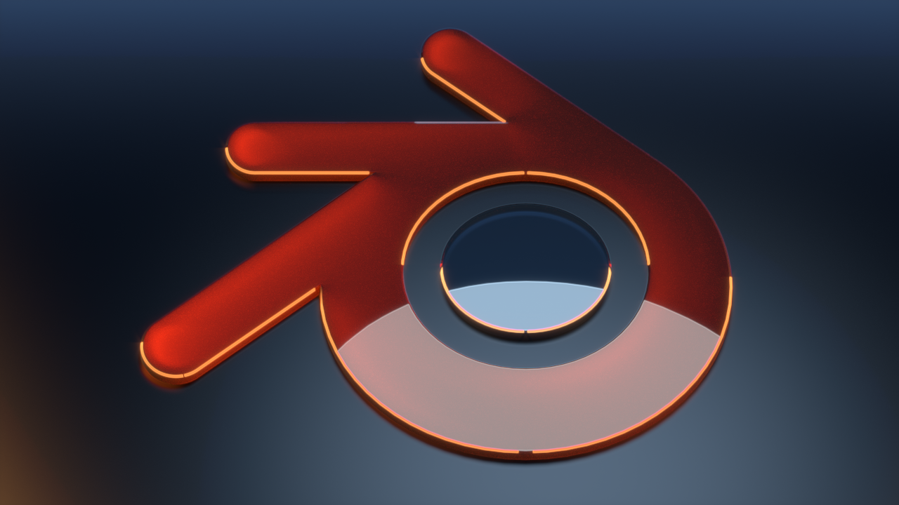

A subdivision görbék és poligoniális felületek kiemelt szerepet töltenek be a számítógépes grafikában és 3D modellezésben. A subdivision görbék olyan technikákat jelentenek, amelyekkel finomabb, simább felületek hozhatók létre a durvább, alacsonyabb poligonszámú hálók egyszerű iterációs felosztásával. Ez a módszer különösen hasznos, ha organikus vagy komplex formákat szeretnénk létrehozni, mivel lehetővé teszi a részletgazdag és folytonos felületek előállítását anélkül, hogy nagymértékben növelnénk a poligonszámot. A poligoniális felületek alapvetően sokszögekből épülnek fel, amelyek háromszögekké vagy négyszögekké bonthatók, és ezek alkotják a 3D modellek vázát, amelyeket aztán finomíthatunk subdivision technikákkal.
A Blender egy nyílt forráskódú 3D modellező szoftver, amely kiválóan alkalmas subdivision görbék és poligoniális felületek kezelésére. A Blender eszközkészlete lehetővé teszi a művészek és tervezők számára, hogy komplex modelleket hozzanak létre, textúrázzanak és animáljanak. A program különféle módokat kínál a subdivision és poligoniális technikák alkalmazására, így a felhasználók könnyedén tudják optimalizálni modelljeiket a kívánt részletesség és teljesítmény érdekében. A Blender közössége és fejlesztői folyamatosan frissítik a szoftvert, új funkciókat és eszközöket adva hozzá, amelyek még inkább megkönnyítik a 3D modellezést és az animáció készítését.
Az Unreal Engine, mint vezető játékmotor, szintén nagyban támaszkodik a subdivision görbékre és poligoniális felületekre a valós idejű 3D renderelés és játékfejlesztés során. Az Unreal Engine lehetőséget biztosít arra, hogy a Blenderben vagy más modellező szoftverekben létrehozott modelleket importáljuk és optimalizáljuk a játékokban való használatra. Az engine különösen hatékony a nagyméretű és részletes környezetek kezelésében, ahol a subdivision technikák segítenek a finom, részletgazdag felületek létrehozásában anélkül, hogy a játék teljesítményét jelentősen csökkentenék. Az Unreal Engine eszközkészlete és valós idejű renderelési képességei révén a fejlesztők lenyűgöző, élethű játékvilágokat alkothatnak, amelyek magával ragadó élményt nyújtanak a játékosok számára.
Subdivision és poligon
A poligoniális modellezés a 3D grafika alapvető technikája, amely háromszögek és négyszögek felhasználásával hoz létre objektumokat. Ezzel a módszerrel részletes és pontos geometriai formák modellezhetők. Gyakran alkalmazzák videojátékokban, animációkban és vizuális effektekben.
Modellezés Blenderben

A Blender egy nyílt forráskódú 3D modellező szoftver, amely kiválóan alkalmas subdivision görbék és poligoniális felületek kezelésére. A Blender eszközkészlete lehetővé teszi a művészek és tervezők számára, hogy komplex modelleket hozzanak létre, textúrázzanak és animáljanak.
Modellezés Unreal Engine-ben
Az Unreal Engine, mint vezető játékmotor, szintén nagyban támaszkodik a subdivision görbékre és poligoniális felületekre a valós idejű 3D renderelés és játékfejlesztés során. Az Unreal Engine lehetőséget biztosít arra, hogy a Blenderben vagy más modellező szoftverekben létrehozott modelleket importáljuk és optimalizáljuk a játékokban való használatra.
Modellező projektek
Alkossa meg kedvenc karaktereit és gyerekkori rajzait 3D karakterek formájában, vagy csatlakozzon az animációs filmet előkészítő karaktermodellezés folyamatához!